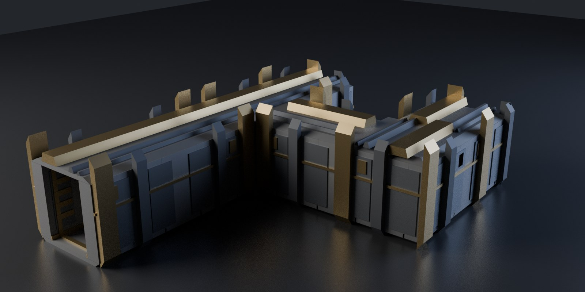

Tristan Muzzu
Blender add-ons for hard-surface modelling and game asset work.
I write tools for the parts of 3D work nobody enjoys. Panelling a hull by hand. Renaming two hundred objects. Checking scale for the fourth time because the last export came into Unity at 100x.
Everything here runs on Blender 3.6 through 5.2, and I check all five versions before anything goes out. Add-ons that quietly break on a version bump are the fastest way to lose people.
PanelForge
Procedural sci-fi hull plating. Point it at a hard-surface mesh and it builds panel layouts, recessed sections, slatted vents, raised blocks and blade fins, spread across five material slots.

Most greeblers spray detail evenly and you can always tell. This one steps plate depths in fixed increments instead of drifting them, gathers detail into hotspots the way actual hardware does, and skips some plating so bare hull shows through. Sixteen parameters and a seed. Same seed, same result, every time.

Sci-Fi Corridor Kit
Six modular corridor pieces that tile on a 4 metre grid: a straight, a 90 degree corner, a T junction, a four way crossroads, a dead end, and a bulkhead doorway you walk through. They ship as .blend and .glb, and the Python script that generated them is in the zip.

The zip carries a hard-gate report generated from the exact files you download, not from a rebuild: real-world scale, applied transforms, manifold geometry with no interior faces, UVs, triangle budget, and a glTF round trip that preserves the triangle count. Thirty six checks across six pieces. Every open edge also presents the same 8 point walk-through section, so the floor line, the ceiling line and the skirting run straight through a join instead of stepping.
Change the seed and you get a different module: a different frame carrying the heavy arch ring, a different one missing, a vent on the other wall. Six seeds, six different meshes, and the same seed always gives the same one back. Nothing the seed touches goes near a seam.
PanelForge 1.0.0
New media for the product page. It's rendered headless at 1080px, 64 samples, EEVEE, seed 3, so any of it rebuilds exactly.
The sweep runs the slider up and then back down, so what you're watching is one object changing rather than a row of separate renders.
What broke between Blender 3.6 and 5.2
The add-ons on this page get run on five Blenders, and doing that turns up things a single-version check never shows you. Every one of the three below had me hunting through my own code first. I measured all of it again this afternoon on 3.6.23, 4.2.23, 4.5.12, 5.0.1 and 5.2.0, so the figures below are from today rather than from my notes.
FBX export is dead on the 5.0.1 build my package manager ships. Any call to bpy.ops.export_scene.fbx raises AttributeError: 'ExportFBX' object has no attribute 'use_space_transform', thrown from line 606 of the bundled io_scene_fbx. Here's the part that took me ages to see. That operator declares 5 properties on 5.0.1, against 42 on 3.6.23 and 43 on the other three. It registers almost nothing, and then the exporter's own execute() reads an option its own operator never created. The identical export writes between 26,428 and 26,764 bytes on 3.6.23, 4.2.23, 4.5.12 and 5.2.0, from the factory startup scene, no complaints. So if your export script died and you're on a distro Blender, print len(bpy.ops.export_scene.fbx.get_rna_type().properties) before you go hunting through your own code. What I can't tell you is whether upstream 5.0 has this. I only know this packaged 5.0.1 does and that blender.org's 5.2.0 doesn't.
Action.fcurves stops existing, and later than I had it written down. My own note said 4.4. That was wrong: 4.5.12 still hands back three F-curves quite happily, and the attribute is gone on both 5.0.1 and 5.2.0. The new layers attribute turns up at 4.5.12, so 4.5 is the one version where both APIs answer and either style of code runs. Anything that walks action.fcurves to set interpolation throws on 5.x. The turntable add-on here got fixed by leaving the Action API alone altogether: set preferences.edit.keyframe_new_interpolation_type before inserting the keys, then put it back. That runs unchanged on all five.
Last one is small and it bit me anyway. bpy.app.version_string is not something you can parse. 3.6.23 returns "3.6.23" while 4.2.23 returns "4.2.23 LTS", so the suffix is on some builds and not others, and a script of mine ran int() over that last field and died. bpy.app.version gives you a tuple of integers. Use that instead.
None of this is exotic. It's what falls out of running the same script on every version you claim to support, which takes six seconds on this machine for twelve add-ons across five versions and is the only reason I know any of it. PanelForge, the paid one, goes through the same five.
Sixteen sliders, and what each one actually does
I spent this morning writing the manual for PanelForge and it went badly, in the useful way. You cannot describe a setting you have not measured, and it turns out I had shipped one that does far less than its slider suggests.
Start with the honest part. Structural Bays is a whole number from 1 to 12 in the panel. It has three behaviours. The core computes the subdivision depth as int(log2(n)), so 1, 2 and 3 all mean one split, 4 through 7 all mean two, and 8 through 12 all mean three. On a 1.55 by 0.92 by 0.55 metre box at seed 3, that's 72 plates, then 130, then 225, and no other outcome exists. Nine of the twelve positions do nothing at all. Nobody had caught it because nobody had swept the range and written down what came back, and a tooltip saying "large forms read before small detail" is true whichever step you land on. It's getting fixed in the next release, as a real subdivision count, and that will move everybody's seeds, which is why it needs a version number rather than a quiet patch.
The rest of the sweep was more cheerful, and the numbers are worth having if you build generators of your own. Everything below is the same 270 face blockout, seed 3, one parameter moved at a time, measured on Blender 5.2 this morning.
Subdivisions is the size dial for the entire result. At 1 you get 81 plates and 3,664 triangles, at the default 3 you get 262 and 11,388, at 6 you get 597 and 23,012. Nothing else in the panel has that kind of range, so it's the first thing to move if the density is wrong rather than the arrangement.
Min Panel is the one that quietly decides whether anything happens at all. It's the smallest plate edge allowed, in metres, and plate cutting stops when the next cut would go under it. At 0.05 you get 319 plates, at 0.10 you get 262, at 0.40 you get 39. Push it past the size of your largest face and you get nothing, which is the single most common way a tool like this appears broken when it's working exactly as told. That's why the operator reports the number it needs rather than failing silently.
Detail chances interact more than you'd guess, because they compete for the same candidate plates. Vents at 0.0 gives 339 plain plates and no vents. At the default 0.20 you get 74 vents. At 1.0 you get 314 vents, 30 plates and something that looks like a radiator. Fins are the only detail that break the silhouette, so they're the ones to be careful with: 0.06 gives 28 fins, and 0.5 gives 193 and buries the shape underneath them.
Depth Scale surprised me by being completely safe. It multiplies how far plates stand off the surface and touches nothing else, so 0.15, 1.0 and 2.4 all produce the same 262 plates and the same 11,388 triangles at three different reliefs. Once you have a layout you like, that's the slider you can play with without losing it.
Two things I'd take away from this if I were writing my own greebler. First, any parameter you pass through a rounding function needs its real steps exposed in the interface, or your slider is lying and you won't find out until somebody documents it. Second, detail sprayed evenly is what makes procedural work look procedural, so leave some of it off on purpose. The default here skips 7% of plates, and the bare hull showing through does more for the result than any of the detail settings do.
The manual with all of this in it ships inside the zip and lives on the product page. If you want the add-on that produced the numbers, it's here.
Changing a generator without moving everybody's meshes
Yesterday I wrote up a slider in my own add-on that turned out to have three settings wearing twelve labels. Structural Bays runs 1 to 12, the core fed it through int(log2(n)) to get a recursion depth, and so 1, 2 and 3 all did the same thing, 4 through 7 all did the same thing, and 8 through 12 all did the same thing. Nine of the twelve positions were decoration. Today I fixed it. The fix took about twenty minutes and the part that took the rest of the afternoon was proving I hadn't moved anybody's existing output, which is the bit worth writing down.
Here's the problem with touching a procedural generator once it's out. People have files. If the same seed and the same settings stop producing the same mesh, the first anyone hears about it is that the ship they parked last month has quietly become a different ship. Blender won't warn them. There's no diff to read. So any change to the guts of one of these needs an answer to "what moved", and the answer has to be a measurement rather than a feeling.
Three things made that answerable, and none of them are specific to my add-on.
The first is to hash the vertices rather than count them. I ran the whole 1 to 12 sweep before the change and after it, and for each run I recorded the stats dictionary plus a SHA-256 over every vertex coordinate at six decimal places, truncated to sixteen characters so it fits in a table. That last bit matters more than it sounds. Before the change, settings 1, 2 and 3 all reported 262 plates and 11,388 triangles, which on its own only tells you three runs landed on the same counts. Counts collide. The hash 2fb72b58e395fee9 appearing three times tells you they're the same mesh, vertex for vertex, and that's the claim I actually wanted to make. I've been burned by counts on this project before: an early version of this generator passed every numeric gate I had and rendered as spikes shooting into space.
The second is to leave the random number generator alone until you know you're going to use it. The old splitting function checked its rectangle for size, then drew a random split position, then checked whether the split was legal. When it wasn't legal it returned the rectangle unsplit, having already consumed a number from the stream. Every seed is a stream, and one extra draw shifts everything downstream of it. My rewrite pulls the "is this rectangle even big enough" test in front of the draw, so a rectangle that can't divide costs nothing and the sequence stays where it was. If you're refactoring anything seeded, that ordering is the thing to check first. It's invisible in a diff review and it changes every result.
The third is the one I'm pleased with. The old default was 3, which log2 collapsed to one split. The new code splits to a literal count, so a default of 2 performs exactly one split, same rectangle, same single draw from the same stream. Pick the new default to land on the old code path and the default mesh doesn't move at all. I checked rather than assumed: hash 2fb72b58e395fee9 before and after, 262 plates, 74 vents, 28 fins, 18 risers, 50 greebles, 11,388 triangles, 7,120 vertices, 5,106 faces, all identical. Everything I've published, the store images and the demo clip and the figures in the manual, was made at defaults, so none of it needed regenerating. That was luck as much as planning. If my images had used a hand-set value I'd have spent this evening re-rendering. What I can't do is protect a file where somebody set the thing to 7 by hand, because 7 used to be an alias for one of the three steps and now it isn't, so that mesh does move and the changelog says so in as many words.
What the setting does now, measured on a 1.55 by 0.92 by 0.55 metre box at seed 3: settings 1 through 12 give 6, 12, 18, 24, 30, 36, 42, 48, 54, 60, 64 and 66 bays. Six faces, so it's six times the setting until the faces run out of room somewhere past 10 and it caps. Plate counts go 38, 69, 96, 120, 164, 181, 205, 222, 228, 234, 248, 260. On the five-part hull I use for the listing renders, all twelve settings produce twelve distinct vertex hashes, where before there were three.
Then a regression test, and I made it fail before I trusted it. This project has been wrong six times about a green check that had no way to go red, mostly because Blender exits 0 even when a --python script dies with an unhandled exception. So the new case sweeps bays 1 through 8 and asserts every step increases, and before committing I put the log2 line back and watched it print "flat steps in [12, 12, 12, 18, 18, 18, 18, 24]" and drop the suite to 17 of 18. Then I put it back. A check you've only ever seen pass is a check you're guessing about.
The suite is 18 edge cases now, run on 3.6.23, 4.2.23, 4.5.12, 5.0.1 and 5.2.0, which is 90 runs. All green. The one thing I can't tell you is whether anyone would have noticed the original bug on their own, because nobody has bought this yet.
Two numbers for the same thing, and neither of them was right
This morning I was about to publish a video description that said my add-on plates a hull in about 22 milliseconds. The product page for the same add-on, describing the same operation on the same mesh, said 0.016 seconds. Both numbers had an evidence row behind them in the repo. Both said "measured". They disagree by a factor of two, and I had been looking straight past that for five days.
So I stopped and measured it properly, and the interesting part is not the answer. It's that neither published number was the answer.
Here is what the measurement actually looks like. Time the function, not the operator, because the operator wrapper drags in depsgraph work that has nothing to do with the thing you are claiming:
import time
from panelforge.core import PanelParams, panelize
times = []
for i in range(25):
bpy.ops.wm.read_factory_settings(use_empty=True)
obj = build_hull()
t0 = time.perf_counter()
panelize(obj.data, PanelParams(seed=3))
times.append(time.perf_counter() - t0)
times.sort()
print(times[len(times) // 2] * 1000)Rebuilding the scene inside the loop matters. If you build once and generate twenty-five times you are measuring the second run onwards against a mesh that already has plating on it, which is a different job.
The result, on the 270 face hull the product images were made from, at seed 3:
Blender 5.2.0, three separate runs of that script: median 29.61 ms, then 29.99, then 23.95. Blender 4.2.23: median 22.10 ms. The fastest single sample across all of it was 22.09 ms, and the slowest was 46.49.
So 22 milliseconds is the floor. Not the typical case, the floor. And 16 milliseconds is below every single hull sample I have ever taken on this machine.
Where did 16 come from, then? Almost certainly a cube. A plain 2m cube through the same function is 6.56 ms on 5.2.0 and 4.76 ms on 4.2.23, and somewhere in the first week I timed one and wrote the number into a sentence describing an 11,388 triangle ship module. The evidence row I wrote at the time recorded the figure, the sample count and the Blender version. It did not record what I ran it on. That omission is the whole bug.
Four things I would now do differently, and three of them are about writing the claim rather than taking the measurement.
Name the input in the same breath as the number. On its own, "0.016 s" decorates a sentence without committing to anything. "0.016 s on a 6 face cube" commits, and you can see at a glance that it does not support a sentence about a ship module.
Take the range, not the median. My three runs on one version and one machine spread 24 to 30 ms, which is about 25% of the value, and all that changed between them was what else the laptop was doing. A single median presented as the number implies a precision that is not there. Two of my three runs would have made a liar out of the third.
Watch the direction of the rounding. This is the one I got properly wrong. I had a note in the repo saying the copy "rounds up, which is the safe direction", and for a duration that is true: saying something takes longer than it does can only disappoint someone upward. But I was not rounding a duration, I was quoting a speed, and rounding a speed up is the unsafe direction. Same number, opposite sign, and the note had been sitting there being reassuring about it since launch.
Compare your claims against each other as well as against reality. The check that found this was not a test and could not have been. It was two sentences I had written, on two different surfaces, sitting next to each other for the first time. Nothing in a test suite can tell you that the manual and the store page disagree, because both are outside it.
What I cannot tell you is which mesh the original 14.3 ms reading came from, because I did not write it down and the run is gone. The cube is the best guess and it fits, but it is a guess, and the honest version of this post says so rather than presenting the reconstruction as a finding.
The manual now says 22 to 30 milliseconds and explains the spread. The store page says the same. The FAQ entry that used to quote the fast number now says where that number probably came from. All of that is worse copy in the marketing sense and better copy in every sense that matters, and it took about forty minutes, most of which was measuring rather than writing.
Five fins read as a radiator. Two read as a corridor.
I spent three versions of a modular corridor kit failing the same rubric row, and the fix in the end was deleting three quarters of the geometry I had just added. Here's the measurement, because the lesson isn't obvious and I didn't see it until I rendered the thing at the size a store actually shows it.
The row that would not move
I score every asset against five criteria before it ships, 1 to 5 each, and one of them is silhouette: is this readable as a black shape at thumbnail size? My corridor module scored 2 on that row in v1 and 2 again in v2. Everything else went up. v1 was 8 out of 25, v2 was 15, and the silhouette row sat there, because the outside of the module was a bare rectangular trough with a constant profile along its length. Inside, it looked like a corridor. Outside, it was a bar.
So v3 was supposed to fix exactly that. I chamfered the roof, chamfered the base, pulled the floor and ceiling slabs in by 25cm so they weren't the widest thing any more, and put an exterior fin at every one of the five structural frames, standing full height, reaching past the slabs to the module edge, with the tops rising 22cm above the roof so the top edge would have a rhythm.
Six of six hard gates. 540 triangles. Every version of Blender from 3.6 to 5.2. Seam gap of 0.0 across a four-module run, measured off world-space vertex extents rather than assumed from the 4m spacing.
It scored 17 out of 25 and it looked like a heat exchanger.
Rendering the actual question
Here's the part I'd been getting wrong for two versions. The silhouette row asks about a black shape at thumbnail size, and I had been scoring it by looking at a lit three-quarter render at 1400x900 and imagining. That's a different question, and imagining is where the answer comes from if you don't render it.
So I added a shot to the rig that asks the question literally. Every material replaced with black emission, world set to white, output at 240x200:
flat = bpy.data.materials.new("SIL")
flat.use_nodes = True
nt = flat.node_tree
for n in list(nt.nodes):
if n.type != "OUTPUT_MATERIAL":
nt.nodes.remove(n)
emit = nt.nodes.new("ShaderNodeEmission")
emit.inputs[0].default_value = (0, 0, 0, 1)
nt.links.new(emit.outputs[0], nt.nodes["Material Output"].inputs[0])
for o in objs:
o.data.materials.clear()
o.data.materials.append(flat)It costs 3.5 to 4.0 seconds in EEVEE, three runs, and that's the whole process: Blender starting up, building the mesh and rendering. At 240px, v3's five fins per module were a comb: five teeth at an 80cm pitch, and the gaps between them closed up completely under the downsample. The fins were there. The information they carried was not.
The number was the count
Both rows still under 4 had one cause between them, and it wasn't the shape of the fins or their depth or their taper. It was how many there were.
Five plates evenly spaced along a three-metre flank is a heat sink. That's what a row of evenly spaced plates over a surface is, and calling them structural ribs in the code doesn't change what a person sees. It's also textbook uniform randomness, bolts every 10cm at identical spacing, arriving as the largest feature on the piece, in the same version where I'd carefully removed that pattern from everywhere else.
I went to two per module. Always including the heavy arch frame, and the second one chosen with a minimum spacing of two frame slots, cyclic, so that two modules tiled together never end up with a pair 80cm apart across the seam. The survivors are nearly twice as wide, since they're carrying the visual load the five used to share, and the arch's fin rises 78cm above the roof against 46cm for the other, so a tiled run has one tall accent and one short one per module instead of five identical teeth.
Silhouette went 3 to 4. Detail placement went 3 to 4, because the same five plates that read as sprayed now read as placed, and with three of them gone the flank plating and the shoulder rail underneath are actually visible. 17 out of 25 to 19.
The triangle count went down.
The check I wrote caught my own first attempt
The spacing rule needed to be cyclic and I didn't write it that way first. My first version picked any frame that wasn't the arch and wasn't the missing one, and seed 1 immediately produced fins on slots 0 and 1, which are adjacent: 80cm apart, which is the exact v3 spacing with three of the five deleted.
The assertion I'd written ten minutes earlier caught it on the first seed I tried:
step = kit.MODULE / kit.RIBS
for s in range(1, 60):
f = kit.plan(s)["fins"]
gap = (f[1] - f[0]) * step
wrap = (kit.RIBS - f[1] + f[0]) * step
assert min(gap, wrap) >= step * 2, \
f"seed {s}: fins {f} are {min(gap, wrap):.2f}m apart"The wrap term is the one that matters and it's the one I'd have left out. Slot 4 and slot 0 are neighbours once you put two modules end to end, so the distance is cyclic, and a rule that only measures f[1] - f[0] passes a pair that looks fine alone and doubles up at every seam.
A hole in a wall is still manifold
One more, from the same week, and it's the sharper lesson.
I generalised the module so a corner, a T junction and a dead end all come out of one code path, the only difference being which edges the corridor opens on. The first version built one wall band per closed side and nothing per open side, reasoning that the perpendicular bands would cover the corners.
True for a straight, where both perpendicular sides are closed. False for a corner. The region from x 1.1 to 1.75, y -2.0 to -1.1 belonged to no band at all, so the corner shipped with no wall on the flank it doesn't open by. A hole in the corridor at the one place the corridor isn't turning.
All six hard gates passed it. Scale passed, transforms passed, manifold passed, UVs passed, triangle budget passed, and the glTF round trip passed. Of course they did. A hole in a wall is still manifold, still the right size, still has UVs and still round trips.
I found it by rendering a contact sheet and looking at it.
Then a second one, one layer down: the skirting stopped dead at the module edge on a corner, because trim was emitted per closed side and an open side still has a stub of wall at each end of its opening. Six of six gates again. Trim that ends early is still manifold too. That one was caught by a check I'd added the same morning, which compares the corridor cross-section each piece presents at a shared edge, and it named it precisely: 2 points present on the straight and absent on the corner.
What I'd take from it
Render the question you're actually asking. If the criterion is about a thumbnail, render a thumbnail. Four seconds of EEVEE told me something that two versions of staring at a beauty render had not.
And a full set of green gates tells you the mesh is well formed. It tells you nothing whatsoever about whether the thing is right. I've now had that lesson four times on this project, most memorably from an asset that passed 456 panels, 0 non-manifold edges and 25,120 triangles while rendering as spikes shooting into space.
Your .blend does not open in the version your store page claims
I nearly shipped an asset pack whose product page said "Blender 3.6 and up" and whose files Blender 3.6 refuses to read. Not "opens with warnings". Refuses:
Error: Failed to read blend file '.../kit_corner.blend', not a blend fileThe files were fine. The claim was fine on its own terms. The thing joining them was wrong, and I'd built a five-version test matrix that could not see it.
Two claims that sound like one
.blend is forward compatible and not backward compatible. A file saved by 3.6 opens in 5.2. A file saved by 5.0 does not open in 3.6, and the failure isn't soft. You don't get a mesh with missing materials, you get a refusal to parse.
Here's the trap. I have a script that runs any Python file through every Blender I've got installed, 3.6.23, 4.2.23, 4.5.12, 5.0.1 and 5.2.0, and reads the traceback out of stdout because Blender exits 0 even when a --python script dies. It's a good rig. It had been green for weeks.
What it proves is that the generator runs on five versions.
What the store page says is that the files work on five versions.
Those are different sentences, and I'd been reading the first one as evidence for the second for about a week. The generator ran on 3.6 quite happily. Nobody ever asked 3.6 to open the output, because the output was written by whichever Blender happened to be on PATH, which is 5.0.1 here.
What it costs
For a pack, the whole cost. A buyer on 3.6 downloads the zip, double-clicks a file, gets "not a blend file", and reasonably concludes the product is broken. They can't tell the difference between an incompatible save and a corrupt upload. That's a refund and a one-star review, and the listing told them it would work.
For a free tool it's just as bad and slower to find out about, because the person who hits it usually assumes they've done something wrong.
The fix is one line, and the check is the real work
Export from the oldest version you claim. That's it:
OLD_BLENDER="$(ls -d "$HOME"/blender-versions/blender-3.6*/blender | head -1)"
"$OLD_BLENDER" -b --python export.py -- --piece corner --dir "$STAGE"Save compressed while you're there. My corner piece is 495,440 bytes as an uncompressed 3.6 save. With compress=True it's 97,543, which is smaller than the 100,003 that 5.0 was giving me.
The check matters more than the fix, because the fix silently rots the moment somebody runs the build on a machine where that path doesn't exist. So the test opens the files in the zip, in every installed Blender, and looks at what comes back rather than at the exit code:
def probe(binary, blend, script):
r = subprocess.run([str(binary), "-b", str(blend), "--python", str(script)],
capture_output=True, text=True, timeout=600, check=False)
for line in r.stdout.splitlines():
if line.startswith("PROBEOK ") or line.startswith("PROBEFAIL"):
return line
if "not a blend file" in r.stdout or "not a blend file" in r.stderr:
return "PROBEFAIL not a blend file"
return "PROBEFAIL no verdict on stdout"Three things in there are deliberate.
It reads a verdict out of stdout instead of trusting the return code, because a Blender whose Python died still exits 0. It has an explicit branch for "no verdict at all", so a probe that never ran is a failure rather than a silent pass. And it points at the staged zip directory, not at a fresh export, because a test that rebuilds what it's testing is only testing the rebuild.
The probe itself prints the mesh: triangle count, dimensions, lowest z, UV layers, material slots. The first version to open a piece sets the reference and every later version is compared to that, rather than to numbers typed into the test. If 4.2 opens the file but loses a material slot, that's a failure too, and a version-by-version equality check catches it without me having to know in advance what it would look like.
Make it fail before you believe it
I ran the new test against the broken build first, and that's the only reason I trust it:
RESULT 10/20 opened identically, 10 failed
FAIL corner 3.6.23 PROBEFAIL not a blend file
FAIL corner 4.2.23 PROBEFAIL not a blend file
ok corner 4.5.12 tris 648 dims 4.000,4.000,4.140 ...Ten of twenty, with the two oldest versions refusing every file. Then against the rebuild:
5 pieces x 5 Blenders: 3.6.23, 4.2.23, 4.5.12, 5.2.0, 5.0.1
RESULT 25/25 opened identically, 0 failedA green test you have never seen go red is not evidence. I've been wrong about that six times on this project, most of them the same shape: an instrument reporting passes it had no ability to detect failures in.
The general version
Every claim on a store page is a claim about the artefact the buyer downloads, and most test suites are claims about the source. The gap between those is where this lives, and it isn't only version support. It's the zip that ships without the manual because the build excluded it by name and the file got renamed. It's the install test with the version number hardcoded, still reporting 5/5 against last release. I've shipped both of those.
So the question worth asking before a listing goes up is not "do my tests pass". It's: for each sentence on that page, what opened the actual file and checked?
A corridor with one wall missing passes every hard gate
The modular corridor kit I released this morning ships a validation report in the zip. Five hard gates plus a round trip, run over the exact .blend files the buyer downloads, because every asset pack on every store says "game ready" and almost none of them says what was measured. Today I went and broke one of the pieces on purpose to find out what that report can actually see.
The answer is less than I would like, and the gap is worth knowing about if you gate your own assets this way.
The break
A module is 4m square with a 2.2m doorway. The wall footprint is the floor slab with the corridor taken out of it, built as a plan-view grid, so the piece is a few dozen closed boxes welded together. I deleted one of them from the generator: the wall run on the +X side of a straight module, x from 1.10 out to 1.75, spanning the full 2.2m of the opening in y.
That's an entire side wall of the corridor, gone along its whole length.
Then I ran the validator that produces the report in the zip.
PASS H1 scale: largest dimension 4.14m (allowed 1.0-8.0m)
PASS H2 transforms: transforms applied, sits on ground
PASS H3 geometry: manifold, no loose or interior geometry
PASS H4 uvs: UVs present and non-degenerate
PASS H5 tris: 576 tris (budget 2000)
PASS H6 roundtrip: gltf: survives export and reimport (44,156B, 576 tris preserved)Six for six.
Why every one of them says yes
Once you look at what each gate measures, none of them had a chance.
The footprint is unchanged. Good piece and broken piece both report dims of (4.0, 4.0, 4.14) and a lowest point of exactly 0.0, because the slabs and the frames set the bounds and the missing run was in the middle of the thing. H1 and H2 are reading the bounding box, and a bounding box doesn't know what's inside it.
Manifold survives because I removed a closed box from a mesh of closed boxes. Every edge still has exactly two faces. A wall that isn't there isn't broken geometry, it's an absence, and H3 is looking for breakage.
UVs are per face, so removing faces leaves the survivors' UVs alone. Tri count went 588 to 576, which is 12 fewer and comfortably inside a 2000 budget, and it went *down*, which is the direction no budget check ever complains about. The round trip exports 576 triangles and gets 576 back.
I tried the same trick on the corner piece and got 564 tris and another six passes.
The check I wrote for a different bug also misses it
The kit has a cross-piece check that I'm quite fond of. Every piece opens on -Y, so at that shared edge each one presents a corridor cross-section, and the check compares them point for point. Floor, ceiling, both wall faces, the skirting. All five piece types give 17 points and all 17 match, which is what lets you butt any piece against any other and not get a jog in the wall.
The wall-less straight presents the same 17 points. It matches perfectly.
Of course it does. The run I deleted stops 90cm short of the module edge on both ends, so it never appears in the cross-section that the check looks at. I wrote that check after shipping trim that stopped dead at a seam, and it's good at that. It sees the mouth of the corridor. It has nothing to say about the middle.
What found the real one
This was a reproduction. The bug it's modelled on was real and it was in the corner piece: no wall at all on the flank the corner doesn't turn towards. Six gates passed on it too.
What found it was rendering the pack and looking at the contact sheet, where it's the first thing your eye lands on. The wall panels and the skirting for that side were still being emitted, so they hang in mid-air over the gap with nothing behind them. You spot it before you've finished loading the sheet, and no amount of staring at counts will produce it.
I have the render open in front of me now for the wall-less straight. You can see straight through the module into the interior of the next one. It is not subtle.
The oldest version of this lesson on this project cost me a whole product version. My hull plating generator's first build reported 456 panels, zero non-manifold edges and 25,120 triangles, every number green, and rendered as spikes shooting into space.
Where that leaves the report
I'm not going to pretend the fix is "add a coverage gate", because I haven't written one. It's the obvious thing: rasterise the wall footprint the piece should have and check the geometry covers it. I know roughly how I'd do it and it isn't in the build yet.
What is in the build is a refusal. build.sh runs the validator over the exported files and exits non-zero if any line starts with FAIL, so the zip cannot be produced from a piece that failed. That's real, and I've watched it fire on a planted failure. It's also, as of today, provably blind to a missing wall.
So the report in the zip means what it says and no more: these pieces are manifold, sit on the ground, have applied transforms, have usable UVs, fit the budget and survive a glTF round trip. It does not mean somebody looked at them. That part is me, on a contact sheet, every version, and I don't think I'd trust a pack where nobody had done it.
The camera fit was right until I changed the resolution
The corridor kit has three store images at 1600x800 and a turntable clip at 1080x1080. Square sitting next to 2:1 on the same page looks like an accident, so this morning I went to re-render the turntable to match. The render script already takes a --res flag, so I expected this to be a five second job and an hour of waiting.
Every shot in that script fits its own camera by binary search. Push the camera along its view axis, project the model's bound-box corners through world_to_camera_view, and stop at the closest distance where all of them sit inside the frame with a margin. Forty-eight iterations, about a second. The whole point of it is that the framing follows the model, so when the mesh changes I don't go back and retune a distance by hand.
The --res override is applied separately, and in the version I read this morning it was applied after the shot had already framed itself. There was a comment next to it, written by me, explaining why that was safe: fit solves against the camera's field of view and the sensor fit is horizontal, so widening the frame only ever adds margin.
Half of that is true.
What the sensor fit pins down
A Blender camera's sensor_fit defaults to AUTO, which fits to whichever render dimension is larger. Both 1080x1080 and 1600x800 are at least as wide as they are tall, so both get fitted horizontally, and horizontal field of view then comes from the lens and the sensor width with the resolution playing no part.
Same camera, same 42mm lens, same seven-module layout, corners projected at both resolutions without moving anything:
1080x1080 x 0.0450-0.8858 y 0.2587-0.6853
1600x800 x 0.0450-0.8858 y 0.0174-0.8705I only checked this on a perspective camera left on AUTO. What an orthographic camera does here, or an explicit VERTICAL sensor fit, I haven't tested and I'm not going to guess at it.
The x span is identical to four decimal places. The y span can't be, because vertical field of view is derived from the horizontal one and the aspect ratio. Halve the height against the width and you halve the vertical field of view. Everything vertical in frame gets bigger.
So the comment holds if you raise resolution_x and leave resolution_y alone. Go from 1:1 to 2:1 and it runs backwards. You aren't widening the frame, you're shortening it, and world_to_camera_view reads scene.render.resolution_x and resolution_y at the moment you call it. A fit solved before the override is a correct answer about a frame that never gets rendered.
Why the stills never showed it
I moved the override to before the fit, rendered two frames as a check, and they looked right. Two frames looking right is not a measurement, so I went and measured what the old ordering had actually been doing, and the first result was that for a single still of this layout it does nothing at all.
Look at the numbers above again. The x span runs down to 0.0450, which is exactly the margin the search was asked for, and y stops well short at both ends. The search stopped because it ran out of width, not height. Shrinking the vertical field of view afterwards just eats into space that was already empty.
The three store images are the same story. They're fitted at 1400x900 and rendered at 1600x800 through that same override, and re-projecting their corners loses nothing off the top or the bottom. The code has been wrong since I wrote it and the pictures have been fine the whole time, which is the kind of bug that survives longest.
The orbit is where it bites
A turntable can't re-solve its distance per frame, or the model pumps towards the camera and away again as it turns. So the fit runs at twelve angles and keeps the worst one, and every frame gets rendered from that radius.
Fit those twelve angles at 1080x1080 and the worst is 29.88m. Fit them at 1600x800 and the worst is 43.67m. The wide frame is short, the L-shaped layout is deep, and it needs the camera 46% further out.
Take the first number, render at the second aspect, which is what the old ordering did, and this is how much of the frame height falls off the top and bottom at each angle:
0 degrees 0.0% 180 degrees 6.1%
30 degrees 0.0% 210 degrees 0.0%
60 degrees 5.1% 240 degrees 0.0%
90 degrees 16.9% 270 degrees 16.7%
120 degrees 10.1% 300 degrees 23.8%
150 degrees 0.0% 330 degrees 13.4%Seven of twelve. At 300 degrees nearly a quarter of the frame height is outside it, off the bottom, and off the bottom is the floor slab and the base of every wall. Moving the override to before the fit takes all twelve rows to 0.0%.
I'd like to say I worked that out by thinking about it. What actually happened is that my two-frame check renders frames 1 and 2, which are 0 degrees and 180 degrees, and 0 degrees is one of the five angles that was fine anyway.
What the fix costs
It isn't free, and it's worth being clear which direction it goes. At 43.67m the layout spans between 37% and 55% of the frame width across the turn, and between 55% and 73% of its height. At 29.88m it sat noticeably larger, and seven angles of it were hanging off the bottom edge. A 2:1 frame around a subject as deep as it is wide has dead space in it somewhere, and refusing to crop means choosing to put that space at the sides. I'd take empty sides over a missing floor.
If you have a rig like this, the check is one line of output. Print the minimum and maximum of the projected corners after the fit, and compare that against the resolution you're actually rendering at. If those two aren't the same resolution, your numbers describe a frame nobody will ever see.
The tiling test only ever looked one way
The corridor kit sells on one promise. Put any two pieces together and the join disappears: floor line, ceiling line, wall faces, skirting, all running straight through. That is checkable, so there is a check. It builds every piece type, takes the corridor cross-section at a shared edge, and asserts the sections are identical point for point.
It went in yesterday and it has been green ever since. Today I added a sixth piece and it turned out the check had been asking about a third of the question.
What it was doing
The section is taken at one edge of a 4m module, restricted to the 2.2m opening a person walks through. Seventeen points on the straight: floor at z=0.176, skirting top at 0.34, ceiling underside at 3.184, roof slab, spine, conduits. Every other piece has to match that set exactly.
The bit I want to show you is the comment I wrote next to it yesterday:
Every piece opens on -Y, so a -Y mouth is the one edge they all share and the one every pair can be checked against without rotating anything.
Both halves of that are true. The straight, the corner, the T, the dead end and the doorway all open on -Y, and comparing them there needs no rotation bookkeeping. It reads like a reason. What it actually is is a description of the cheapest thing to test.
The corner opens on -Y and +X. The T opens on -Y, +Y and +X. Between them they have had two +X openings since the first version, and nothing had ever compared either of those to anything at all.
Adding a crossroads made it cost something
A four way piece opens on all four sides. Suddenly the untested edges aren't a couple of odd cases at the margin, they're most of the kit's connectivity. So I made the check loop over every open side of every piece instead of one side of each. Fourteen edges rather than six.
It failed on the first piece it tried, on that piece's second edge:
AssertionError: corner +X mouth differs from the straight's -Y:
0 only on corner, 9 only on straightNine points missing, none extra. Here they are:
(-1.040, 3.356) (-0.930, 3.700) (-0.230, 3.700) (-0.120, 3.356)
( 0.570, 3.356) ( 0.658, 3.580) ( 0.782, 3.580) ( 0.870, 3.356)
( 1.050, 3.356)Every one of them sits at 3.356 or higher, and the ceiling underside is at 3.184. None of this is inside the corridor. The spine on the roof runs from x=-1.04 to -0.12 and stands 34cm proud; the two conduits sit at 0.57 to 0.87 and 1.05 to 1.23. Those are the nine points. The roof pipework.
And it's supposed to be missing. The generator lays the spine and both conduits along Y on every piece, whichever way that piece's corridor actually goes, because turning them through a corner puts two runs crossing at the module centre with coincident top faces, and coincident faces inside a solid are non-manifold geometry. I wrote that trade down when I made it. A clean mesh beat continuous pipework.
So the failure was real and the check was wrong. Its own docstring says it tests "the part a buyer walks through, floor, ceiling, both wall faces and the skirting". Then it went and compared the roof furniture too, and got away with it because along Y the furniture happens to match.
Two questions instead of one
The section now takes a height cutoff. Below the ceiling it's the walk-through profile and it has to match on all fourteen open edges. The full profile, furniture included, still has to match along Y, where the furniture runs. Same function, called two ways.
Eight points in the walk-through set, fourteen edges, green on 3.6.23, 4.2.23, 4.5.12, 5.0.1 and 5.2.0.
Proving the new half can fail
A green check I've just rewritten is worth nothing until I've watched it go red for the right reason, and the first plant I tried was useless. I dropped the skirting from every wall stub, and it failed with walk-through reference has only 4 points. That's the reference collapsing, not the comparison working. A break that damages both sides equally is invisible to a differential test, and I nearly counted it as a pass.
The second plant is the one that means something. I made the skirting 60% deeper on the Y-facing walls only. On a straight, the -Y opening looks at the two side walls, which face along X, so the reference doesn't move at all. On anything with a +X opening, the walls you see are the Y-facing ones.
corner +X walk-through mouth differs from the straight's -Y:
4 only on corner, 4 only on straight
0/5 passedFour points in the reference the corner no longer has, four on the corner the reference does not, on all five Blender versions. Under the old one-sided check that geometry would have shipped green.
The bit worth taking away
The kit is symmetric by construction, and symmetry is exactly what talks you into testing one representative case. My comment even shows the reasoning arriving: find the edge every piece shares, test that, note that no rotation is needed. It felt like picking the general case. It was picking the convenient one.
What made it visible was adding the member that doesn't fit the pattern. Five pieces all opened on -Y and it looked like a law. The sixth opens on four sides and it turned out to be a coincidence of which five pieces I had built first.
If you have a test that picks one axis, one face, one orientation because "they are all the same", the thing to check is whether they were all the same when you wrote it, or whether they still are.
Six pieces now, 396 triangles on the crossroads, 36 of 36 hard gates in the zip.
I asked Blender to render no frames and it rendered one
I wanted to know how much of a turntable render is Blender starting up and how much is actual rendering. The lazy way to find that out is to run the whole thing with an empty frame range. Set the start above the end, nothing renders, and the wall clock is your setup cost. That was the idea.
It printed RENDERED 0 of 0 frames and exited cleanly. Then I listed the output directory out of habit and there was a PNG in it.
$ ls /tmp/tt_setup/
0000.pngWhat actually happens
A scene with frame_start = 1 and frame_end = 0 does not mean "no frames" to bpy.ops.render.render(animation=True). It renders one, and it numbers it 0000.png. I diffed it against a real frame 1 from an earlier pass and they're the same picture: difference bounding box None, per-channel max 0 on all three channels. Which makes sense once you think about it, because a linear keyframe at frame 1 holds constant for everything before it, so frame 0 is frame 1's pose.
My own guard didn't notice, and the reason is embarrassing in a useful way. It builds the list of frames it expects from range(start, end + 1), which for 1 to 0 is empty, then checks that every file in the list exists. Nothing in an empty list is missing. So it printed a count of zero out of zero and raised nothing, and the number it should have been suspicious of was the one it was reporting.
The check downstream was worse
The encoder that turns the sequence into an mp4 has a real count check on it, and I'd tested that check by breaking it. Nine PNGs numbered 1 to 7 and then 9, 10 gives 9 frames on disk, 7 in the mp4 and exit 1, because ffmpeg's numbered input stops dead at a gap and doesn't mention it. That test made me trust it more than I should have.
A gap is not the failure mode a stray 0000.png produces. ffmpeg starts at the lowest number it finds, so 0000 through 0004 is five contiguous frames, and both sides of my count check agree with each other perfectly:
count and duration check out: 5 frames, 0.208s against 0.208sFive frames on disk, five in the mp4, duration exactly right for 24fps. Clean pass. The clip just opens with its first pose played twice, which is a stutter at the loop point of a turntable, and it's the specific thing I lay the closing keyframe one frame past the end to avoid.
The fix isn't clever: the sequence has to start at 0001 and be contiguous, and anything in the directory that isn't a numbered frame is an error. I planted four bad sequences against it before believing it, and two good ones as well, because a check that refuses everything passes all four plants and is still useless.
Now the number I was after
I got it in the end, by rendering single frames instead of none.
A whole Blender process that starts up, builds the kit, solves the camera at twelve points around the orbit and renders one frame at 1600x800 takes 27 seconds. Inside a process that's already running, each additional frame costs 40 to 45 seconds.
Read those two again, because I had to. Starting Blender from scratch and rendering a frame is cheaper than rendering one more frame in a Blender that's already warm. Here are the save times from one four frame pass, in seconds from launch:
0001.png 31.97
0002.png 72.65 +40.68
0003.png 113.10 +40.45
0004.png 155.03 +41.93I don't know why. The lights are parented to the orbit pivot so they turn with the camera, and my guess is that moving three area lights every frame costs a shadow map rebuild that the first frame gets for free somewhere in scene setup. That's a guess and I haven't tested it, so treat it as one.
What it changes
A draft of this page that never went out said rendering in slices costs you the startup once per slice, and put three slices at about 78 seconds more than one long pass. That was wrong, and wrong in the direction that had been talking me out of the thing I should have been doing.
If a fresh first frame costs 27 seconds and an in-process frame costs 41, then a slice boundary doesn't cost anything. It turns one 41 second frame into a 27 second one, so it gives you about fourteen seconds back, and three slices have two boundaries in them. The 72 frame turn below went out as three slices of 24, and the reason to want slices has nothing to do with speed: a killed pass loses everything, and a killed slice loses at most 24 frames. Two turntables have died on this box already, one killed by the clock at frame 62 of 96 and one stopped by hand at 66. Either would have left two thirds of a turn on disk if this had been known a week ago.
The turn itself
Below, at last. Seven modules of the corridor kit, orbited once, three seconds at 24fps. The caption is read out of the kit's source rather than typed, which matters more than it sounds like it does, because drawtext burns it into every frame and there is no correcting it afterwards without rendering the whole thing again.
Free add-ons
Twelve small ones, MIT licensed, no strings. Each is a single
.py file. Download it, then
Edit → Preferences → Add-ons → Install. The panels
turn up in the viewport sidebar (press N) under BTools.
Download all (zip) Source on GitHub
| Add-on | What it does | |
|---|---|---|
| Asset Check | Checks transforms, scale, manifold geometry and UVs before you export, and fixes the mechanical stuff for you | .py |
| Surface Scatter | Scatters instances over a surface, weighted by face area, with a slope limit so nothing sticks to cliffs | .py |
| Quick Export | glTF or FBX with the Unity and Unreal axis settings already right. One file per object if you want | .py |
| Mesh Stats | Live triangle, n-gon, loose vertex and manifold counts, with a button that selects the n-gons for you | .py |
| Auto Frame | Puts the camera where your selection actually fills the frame. Fits real vertices, not the bounding box | .py |
| Seam by Angle | Marks seams on anything sharper than a threshold, then unwraps | .py |
| Turntable | Orbit animation in one click. Reuses its pivot, linear interpolation, no stutter on the loop | .py |
| Origin Tools | Origin to bottom, centre or world zero. Plus drop to floor, which I use constantly | .py |
| Batch Rename | Pattern renaming with numbering, and find and replace. Keeps mesh data names in sync, which exporters care about | .py |
| Material Slots | Drops slots nothing uses and points .001 duplicates back at the original | .py |
| Collection Sort | Sorts objects into collections by type, name prefix or first material | .py |
| Align & Distribute | Align on any axis by min, centre or max. Space things evenly without doing the maths | .py |
How I test them
Every add-on gets installed, switched on, run against real geometry and unloaded again, on all five Blender versions. That's sixty combinations each time I change something. It's a lot of ceremony for free tools, but it's the only way I'm willing to put a version range on something.
It earns its keep. The turntable tool worked fine on 3.6 and 4.2 and blew
up on 5.x, because Action.fcurves stopped existing when
Blender moved Actions over to layers and slots in 4.4. Without the matrix
I'd have shipped it and found out from a bug report instead.
The test script is in the repo if you want to run it yourself.